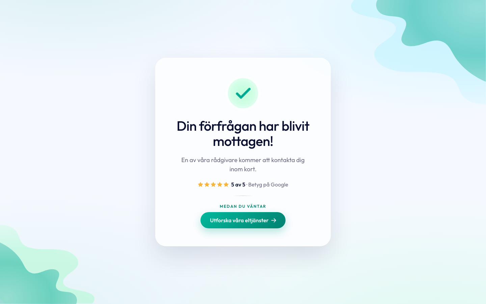

Riktning 1
Ljus & varm
SLUTVERSION (omtag A "Samlat kort"): ett lugnt glaskort som ankrar innehållet, Ampys egen animerade check, ren rubrik + paragraf, ★ 5 av 5 · Betyg på Google som lätt text, och en proportionerlig "Medan du väntar"-knapp. Rätt hierarki, inget flytande i tomrum.
★ Vald riktning